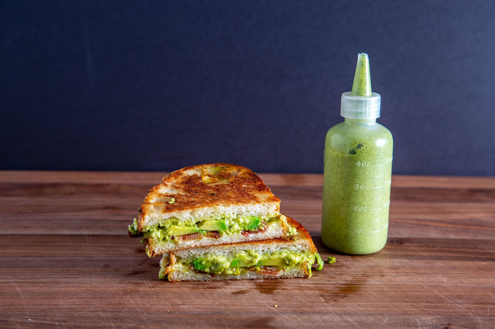

The Fort Greene (Grilled Cheese Sandwhich)
Original Website

The Fort Greene Sandwhich is your classic bacon grilled cheese sandwhich with a green twist
Recipie By Steve Custao from Not Another Cooking Show
This is the Fort Greene sandwich from Steve's old food truck, Food Freaks, named after Fort Greene Brooklyn,
the neighborhood his truck lived. The sandwich is special because of this cilantro sauce his brother created.
Its a sauce that is good on basically everything and today you will learn to make cilantro special sauce as well
a grilled cheese with bacon, avocado, Fontinella Cheese, sourdough bread all taken to new levels with this
delicious cilantro sauce.
Ingredients
Cilatnro Sauce Ingredients
- 3 larges bunches of cilantro
- 2 bunches of chives
- 2 bunches of scalions (green onion)
- 2 jalapenos
- 1/2 cup avocado oil
- 3/4 - 1 cup lime juice
- 2 tablespoons agave
- Salt
- 1/2 cup mayo to finish
- 1 avocado
Sandwhich Ingredients
- 2 pieces of sourdough
- 1/2 cup of Fontinella cheese
- 1/4 of an avocado sliced thin
- Mayo
Equipment
- Blender
- Cast iron pan
- 1/4 sheet trays
- Off-set mini pastry spatula for spreading the mayo
Instructions
Cilantro Sauce
- Wash all the herbs, jalapenos, and limes
- Place all the herbs, jalapenos, and limes juice in the blender, but add the lime juice in increments
- Add in mayo, agave, salt, oil, and avocado, and blend again. Add more agave or lime juice to your preference
Sandwhich
- Dice bacon into bite-sized pieces and cook ina ban until fat is fully rendered and the bacon is crispy
- Grate the cheese on a holed box grater and keep at room temperature
- Cut 1/4 of an avocado into slices
- Preheat a cast-iron pan on low heat for about 30 minutes prior to cooking
- Lay two pieces of sourdough bread down so that their flat bottoms are snuggled against each other
- Add 1/4 cup of cheese on each side of the bread (add more if prefered)
- Add bacon bits to one side of the sandwhich, followed by the avocado
- Add liberal amounts of cilantro sauce.
- Close the sandwhich like a book and with intention
- Raise cast iron pan to medium heat and add the sandwhich to the pan
- While the sandwhich is toasting, smear the thinnest layer of mayo on each side
- Once both sides are browned, lower the heat and flip every 20 seconds or so to avoid over browning
- Once the cheese is meleted, let the sandwhich rest for one minute
- Consume with hot sauce